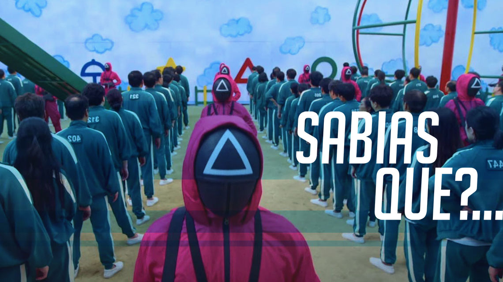

Curiosidades sobre séries e filmes

CURIOSIDADES CURIOSIDADES
CURIOSIDADES: SQUID GAMECURIOSIDADES: LUCIFER
5 OUTUBRO, 20217 SETEMBRO, 2021
Continuamos a trazer curiosidades sobre as tuas séries favoritas
e desta vez vamos dar a conhecer-te algumas sobre Squid Game:
1. Hwang Dong-hyuk, o criador, … Continuamos a trazer curiosidades sobre as tuas séries favoritas
e desta vez vamos dar a conhecer-te algumas sobre Lucifer,
cuja 6.ª e última temporada está …
CURIOSIDADESCURIOSIDADES
CURIOSIDADES: WANDAVISIONCURIOSIDADES: EUPHORIA
19 MAIO, 202111 NOVEMBRO, 2020
Continuamos a trazer curiosidades sobre as tuas séries favoritas
e desta vez vamos dar a conhecer-te algumas sobre
WandaVision: 1. WandaVision é a primeira série …
Continuamos a trazer curiosidades sobre as tuas séries favoritas
e desta vez vamos dar a conhecer-te algumas sobre
Euphoria: 1. Euphoria é a adaptação americana …